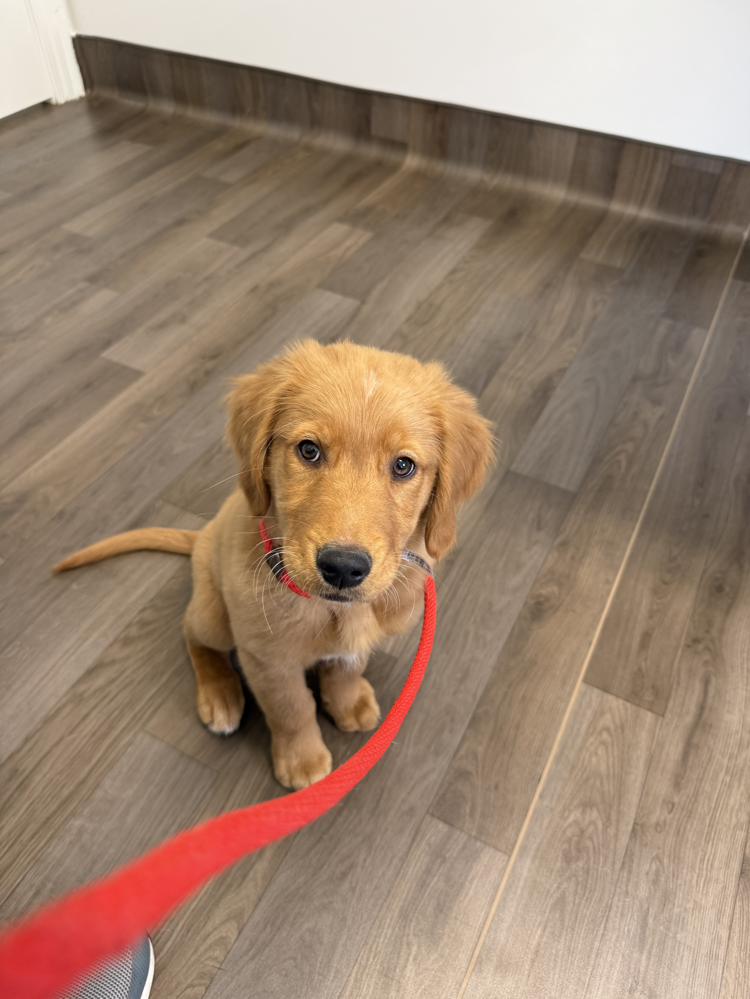

The staircase
Training is step by step. Start with heavy guidance (treats, leash, hands); fade help over time. If he struggles, take a step back—don’t rush to the “top step.”

Crowned K9s Premium Puppy Placement
Your guide to living with a Crowned K9s premium puppy—potty rhythm, communication, commands, and the mindset that keeps training simple.
Kobe × Katheryn · Born Dec 29, 2025 ·
Golden Retriever · Private PPP family playbook

Lead with Confidence, Train with Crowned K9s.
Your #1 priority
Here’s the truth: If you protect Kobe’s potty rhythm, everything else becomes 10× easier.
Kobe will need to go outside after these four events:
Bathroom → Train (5–10 min) → Eat → Bathroom → Nap/alone time → Bathroom → Play → Bathroom
Know your pup
Kobe gets restless and squirmy when tired—often picking up and eating things off the ground.
How to handle it:
Pro tip: Tired puppies = trouble puppies. This behavior usually means nap time.
Foundations
These ideas shaped his training. They keep progress simple instead of overwhelming.
Training is step by step. Start with heavy guidance (treats, leash, hands); fade help over time. If he struggles, take a step back—don’t rush to the “top step.”
Sessions stay 1–2 minutes. End on success while he’s still engaged—leave him wanting more.
A rep only “scores” if you release him. Held Sit 4 sec + “Break” = counts. Pushed to 10 sec and he broke himself = doesn’t count—reset easier and win smaller.
Rotate: food, toys, touch, praise, freedom (“Break,” sniff, run). Mix rewards; don’t accidentally pay unwanted behavior with attention.
Guide movement with food; mark “Yes” at the right instant; release with “Break.” Name the behavior after he understands the movement.
Avoid full sentences. Use words he knows; let timing, body language, and rewards do the talking.
Communication
Kobe’s trained on a simple, consistent system. These three words are the foundation.
Marks the exact moment he’s right—the bridge to the reward (replaces a clicker). Say it immediately, then pay him.
Tells him to keep doing what he’s doing (duration on Sit, Place, etc.) without releasing yet.
His release word—freedom after a command. Pair with a light touch on the nose if helpful. He should not self-release from Sit, Down, Inside, Wait until “Break.” Use “Break” through the day so puppy life stays normal.
Maintenance & transfer
He understands these behaviors—now he needs to learn that you speak this language too. Short, happy reps. This is your training, not his.
Means
Look at me.
How we taught it
Food near your face → sounds → the instant he meets your eyes, Yes → reward. Add “Kobe” right before the look as it becomes consistent.
Your practice
Short games, several times a day. His name = eyes on you, not “I heard a noise.”
Means
Polite default for greetings, food, waiting.
Your practice
Before meals, doorways, greetings—Yes when his bottom hits the floor. Bonus: he may sit to remove leash pressure; reward that choice.
Means
Settle and relax.
Your practice
Capture downs. He loves offering Down with distractions—keep paying it heavily.
Means
Go to his spot and stay until released.
Your practice
Short reps; build duration with the scoreboard—release at 5s, then 8s, then 10s. End on a win.
Means
Run to me.
How it started
A game—“Come” only when he was already moving toward you for a stacked success rate.
Now
Use “Come” when you’re confident he’ll make it. If not sure, get attention first (name, movement), then call. Build proof in low distraction first.
Maintenance & transfer
Means
Nose to hand.
Your practice
Gold for grooming, vet, nail trims, and “get close” without wrestling.
Means
Disengage from the thing (food, object, ground).
Approach
Heavy emphasis on name → attention → Yes. Leash cycle: light consequence for diving in → pressure off when he disengages → Yes for the right choice.
Means
Pause—don’t move through the threshold until Break.
Your practice
Meals, crate door, front door, gates. If he can’t wait at doorways, impulse control outside gets harder.
Means
Go in the crate on his own.
Your practice
Make the crate a choice—treats, toys, chews. Daily alone time in crate to prevent separation anxiety.
Means
Go potty now.
Your practice
Say it once as he starts; stay neutral. When he finishes—Yes and a big payoff.
Means
Stop mouthing hands.
Your practice
Calm “No Biting,” redirect to a toy, reward for choosing the toy. Consistency wins—this phase passes.
Calm comes from clarity
Kobe is released through every doorway—inside, outside, gates, crate. He pauses until Break. This builds impulse control, safety, and respect for thresholds.
Golden rule: If he can’t control doorways, he won’t control distractions outside. Master this first.
Be consistent on furniture rules, food waits, and doorways. Dogs want expectations—not chaos.
Reward eye contact and calm choices. Choosing you unlocks rewards—keep that bank account full.
Welcome to the family
Premium Puppy Placement includes an ongoing support system—not just a puppy.
Lead with Confidence, Train with Crowned K9s.
Text: 919-816-2426 · lorenzo@crownedk9s.com · crownedk9s.com